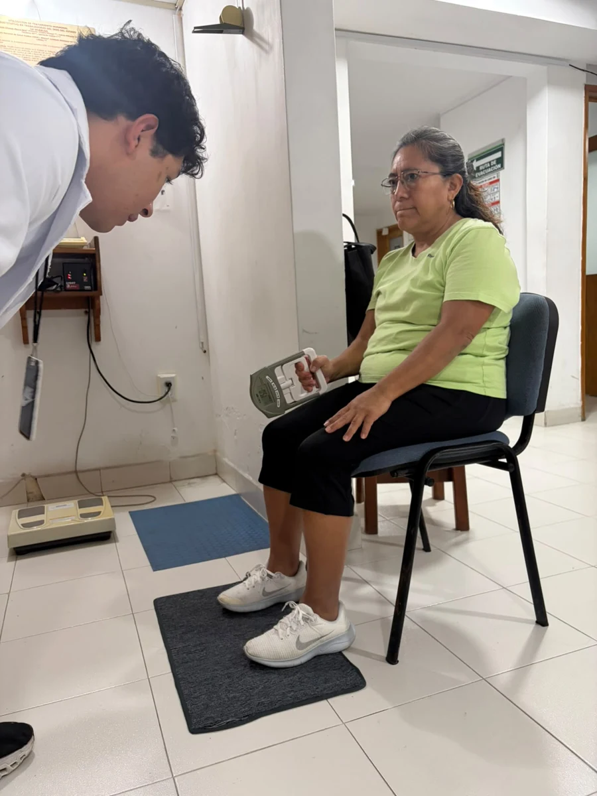

Observar hoy.
Comprender
el mañana.
Cohorte de Trabajadores
de la Salud · México
Una historia de salud que se construye a lo largo del tiempo. Investigación que reúne evaluaciones, muestras biológicas y estilos de vida para comprender cómo cambia la salud de sus participantes.

Detrás de cada dato,
hay una persona.
La Cohorte de Trabajadores de la Salud es un estudio observacional, prospectivo y longitudinal. Sigue la salud de trabajadores del sector salud y sus familias mediante distintas rondas de evaluación.

Una perspectiva longitudinal
Los datos de distintas fases permiten observar cambios en las mismas dimensiones de salud a través del tiempo.
Información que se complementa
Cuestionarios, evaluaciones físicas, pruebas clínicas, imágenes y muestras biológicas ofrecen distintas perspectivas del estudio.
Investigación para comprender
El análisis conjunto permite estudiar asociaciones entre hábitos, factores biológicos y enfermedades crónicas.